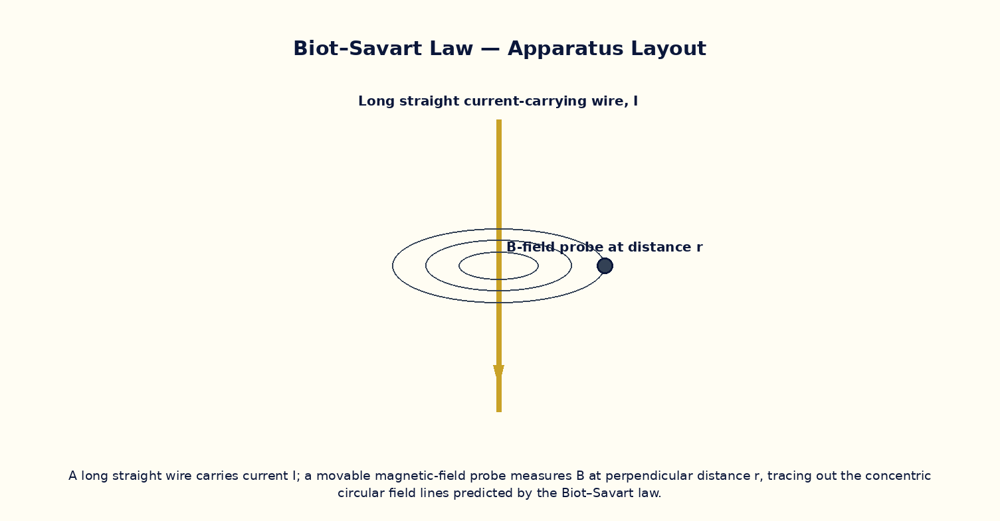

Biot–Savart Law — Magnetic Field Due to a Current-Carrying Wire¶

Aim¶
To compute the magnetic field due to a finite straight current-carrying wire using the Biot–Savart law, verify the perpendicular-distance dependence, and recover Ampere's infinite-wire result as a limiting case.
Theoretical Background¶
The Biot–Savart law gives the magnetic field contribution dB at a field point due to a current element I·dl as dB = (μ₀/4π)· I dl × ŕ / r², directed perpendicular to both the current element and the line joining it to the field point. Integrating along a finite straight wire of length L, the field at perpendicular distance a from the wire is B = (μ₀I/4πa)·(sinα₁ + sinα₂), where α₁ and α₂ are the angles subtended by the wire's two ends at the field point. As the wire's length is taken to infinity (α₁, α₂ → 90°) this reduces to the familiar infinite-wire result B = μ₀I/2πa, which can also be obtained far more simply from Ampere's circuital law when the geometry has enough symmetry.
Governing Formula¶
| Symbol | Meaning |
|---|---|
| B | magnetic field at the probe point (T) |
| I | current in the wire (A) |
| a | perpendicular distance from the wire (m) |
| α₁, α₂ | angles subtended by the wire's two ends at the field point |
| μ₀ | permeability of free space (4π×10⁻⁷ T·m/A) |
Interactive Controls¶
Launch the simulator and use the following controls on the Biot–Savart Law — Magnetic Field Due to a Current-Carrying Wire panel:
| Control | Symbol | Range | Default |
|---|---|---|---|
| Current | I | 0.5–10 A | 2 A |
| Perpendicular distance | a | 1–30 cm | 10 cm |
| Wire length | L | 10–200 cm | 40 cm |
Procedure¶
- Fix a short wire length L and current I, and vary the probe distance a; plot B vs 1/a and check linearity near the wire's midpoint.
- Fix a and I, and increase L progressively; observe B approaching the infinite-wire value μ₀I/2πa asymptotically.
- At fixed a and L, vary I and verify B ∝ I.
- Move the probe off the wire's perpendicular bisector (nearer one end) and observe the asymmetric α₁, α₂ and resulting change in B.
- Compare a numerically Biot–Savart-integrated value with the closed-form (sinα₁+sinα₂) formula for several geometries.
- Use the right-hand rule to verify the predicted direction of B at several probe positions around the wire.
Observation Table¶
| S. No. | Current I (A) | Distance a (cm) | Wire length L (cm) | α₁ (°) | α₂ (°) | Field B (×10⁻⁵ T) | |---|---|---|---|---|---|---|| | | | | | | | | | | | | | | | | | | | | | | | | | | | | | | | | | | | | | | | |
Graph¶
B vs 1/a at fixed I, L — approx. linear near mid-span
Calculations¶
Use the governing formula above with your tabulated observations to compute the required result for each row. Show at least one complete sample calculation with units.
Result¶
| Wire length L | B (finite wire) | B (infinite-wire formula) | % difference | |---|---|---|---|| | | | | |
Precautions¶
- Keep the field point on the wire's perpendicular bisector unless deliberately studying the asymmetric case.
- Note the finite-wire formula converges to the infinite-wire result only when L ≫ a.
- Apply the right-hand (or Maxwell's corkscrew) rule consistently to fix the field's direction, not just its magnitude.
- Keep the current within a realistic laboratory range to keep the field small enough for safe virtual probes.
Maximum Permissible Error¶
For the infinite-wire limit B = μ₀I/2πa, a simple quotient, so fractional errors in I and a add.
Viva-Voce Questions¶
- State the Biot–Savart law in vector form and compare its structure with Coulomb's law.
- Derive the infinite-wire field formula B = μ₀I/2πa as a limiting case of the finite-wire result.
- In which direction does B point around a current-carrying wire, and which rule fixes this?
- Why is the field due to a straight wire independent of its cross-sectional shape (for a thin wire)?
- How would the Biot–Savart integral change for a wire bent into an L-shape?
- Compare and contrast the Biot–Savart law with Ampere's circuital law — when is each more convenient to use?